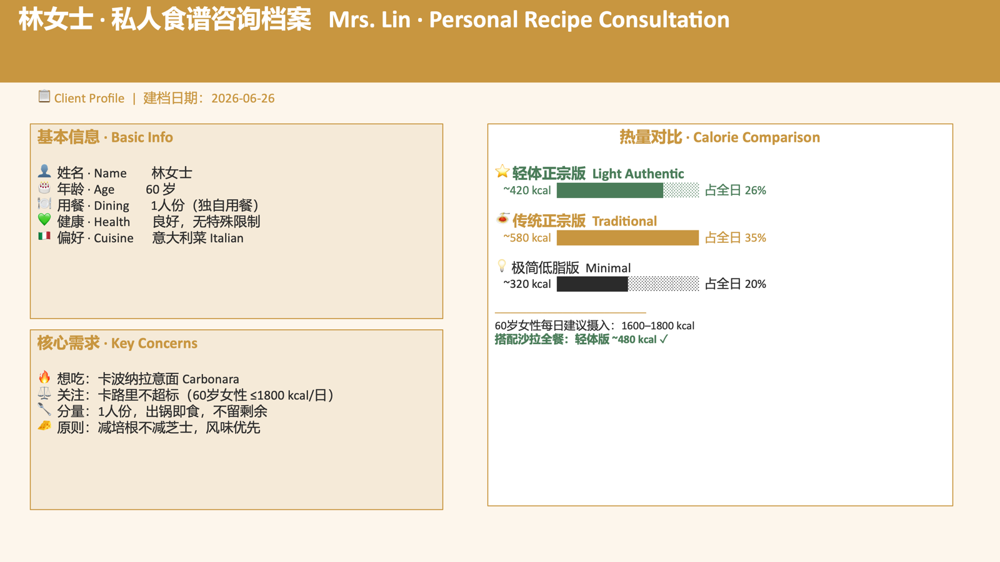
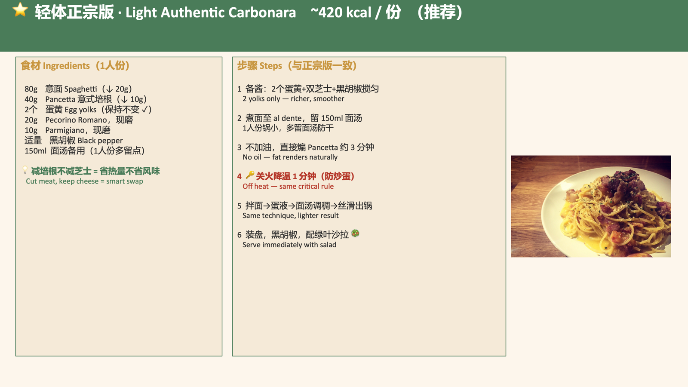
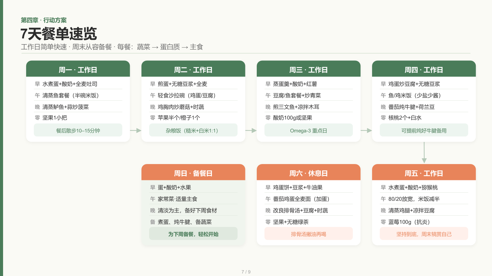
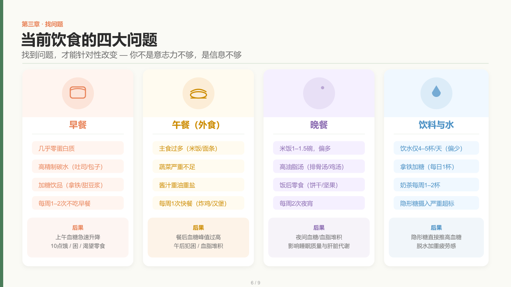
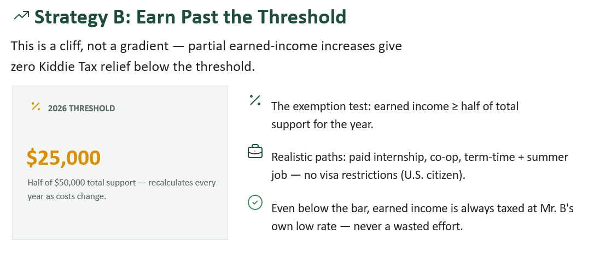
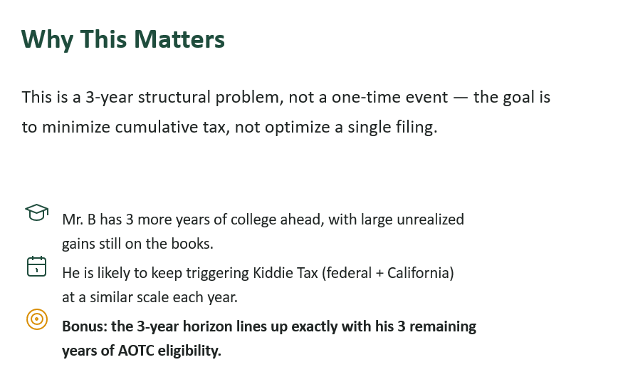

DEMO DAY成果展示夜 · 十二个项目，一个晚上Showcase Night · Twelve projects, one evening
过去几周，我们从零学着用 Claude Cowork 和 Claude Code 把想法变成能跑的东西。今晚，十二位同学把自己真正做出来的项目，现场跑给你看。Over the past weeks we learned to turn ideas into working things with Claude Cowork and Claude Code. Tonight, twelve students run their real projects live.
为什么要来 Demo Day？Why come to Demo Day?
见优秀学员怎么做的See how top students built it
12 位同学把真实项目跑给你看：哪个 prompt 真正奏效、工作流怎么拆、遇到了什么坑。不是理论——是可以直接借用的方法论。12 students run real projects live: which prompts actually worked, how they structured workflows, what tripped them up. Not theory — reusable methodology you can steal.
现场 Demo · 可以提问Live · Q&A welcomeNo one left behind · 专项答疑课No one left behind · Follow-up Q&A
Demo Day 后，Austin 会安排一次专项答疑课——专门帮还在卡关的同学把项目跑通。有困难不是问题，问题是没人陪你突破。After Demo Day, Austin will run a dedicated Q&A session for students still stuck — making sure everyone gets their project working. Being stuck isn't the problem; having no support is.
Demo 后另行通知Announced after Demo Day兴趣小组 · 持续互帮互助Interest groups · ongoing mutual support
Demo Day 后按方向组建四个兴趣小组（财富管理 / 金融分析 / 内容创作 / 其他方向），微信大群 + 独立 Zoom + 共享 GitHub，一起长期做下去。Four interest groups form after Demo Day — Wealth / Financial Analysis / Content / Open Track — with WeChat, monthly Zoom, and shared GitHub to keep building together.
4 个方向 · 学员专属4 tracks · Students only今晚的流程Tonight's flow
每个 Demo 怎么讲 · 9 分钟How each demo works · 9 min
解决了什么问题What problem it solves
你怎么想到的？解决了生活或工作里的什么真实问题？How did you get the idea? What real problem in life or work does it solve?
Screen share 演示Screen-share demo
直接跑一遍，不用解释代码，让大家看结果。Just run it live — no code walkthrough, show the result.
一个坑 / insightOne pitfall / insight
意外的坑？意外好的效果？下次会怎么改？An unexpected pitfall? A surprising win? What you'd change next time?
十二位讲者Twelve speakers
作品 & 心得展示Student work & takeaways





